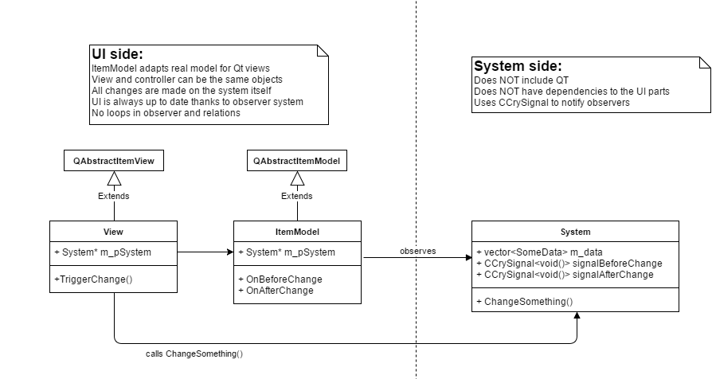
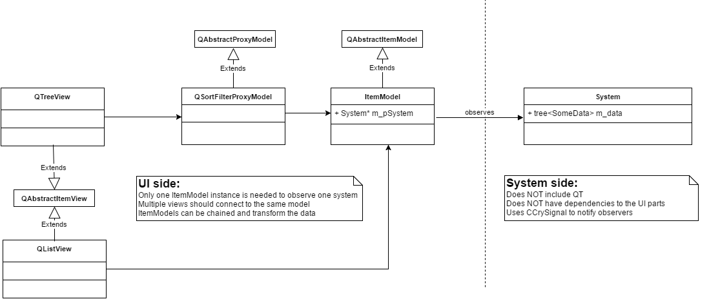
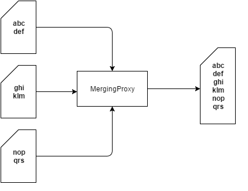
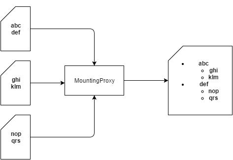

Введение
Модели элементов — это самая полезная и мощная функция Qt. Многие из них вы будете использовать при создании деревьев, списков и полей поиска. Изучите, как они работают, научитесь их использовать — это одна из основ хорошего программирования на Qt.
Документация и руководство по Qt:
ItemModels следует за вариантом MVC под названием Модель-Просмотр-ViewModel где ViewModel (QItemModel) находится посередине и согласовывает всю связь с моделью (вашей системой).
На изображении ниже представлена реалистичная диаграмма типичного использования QItemModel:

Важные вещи, на которые следует обратить внимание:
Ни ItemModel, ни представление не воспроизводят состояние системы, т.е. в ItemModel нет полей, только указатель на систему.
Представление может обойти ItemModel, чтобы действовать как контроллер и напрямую изменять Систему.
Можно написать представление, даже не включая зависимость от System, вызвав все модификации модели (setData).
Как написать свою модель
При написании модели можно выбрать один из двух вариантов: наследование от QAbstractItemModel или используя QStandardItemModel. Хорошим выбором почти всегда является наследование.
QStandardItemModel имеет очень многословный и трудночитаемый синтаксис.
QStandardItemModel имеет собственное состояние и поэтому нарушает шаблон MVC.
QStandardItemModel всегда менее эффективен с точки зрения памяти и производительности.
С другой стороны QAbstractItemModel:
Не будет хранить никаких состояний, кроме указателя на вашу систему.
Предоставляет доступ ко всем функциям моделей, которые изменятся со временем.
Позволяет использовать множество трюков, о которых мы поговорим позже в этом документе.
Вывод: всегда наследуйте от QAbstractItemModel (или QAbstractListModel для списков).
Единственный раз, когда QStandardItemModel разумно для полностью static модели, у которой еще нет соответствующей системы, то есть для чистых UI вещей, которые никогда не меняются. Даже в этом случае это спорный выбор из-за неуклюжести использования QStandardItemModel.
Объединение моделей
Модели и представления можно очень творчески комбинировать для достижения желаемых результатов. Обратите внимание, что это означает, что мы можем отображать данные Системы по-разному, вообще не меняя Систему.

На этой диаграмме QListView видит «плоский» список модели, тогда как QTreeView видит отфильтрованную иерархию модели.
Для каждого экземпляра System нам нужен только один соответствующий ItemModel. С этого момента к исходной модели можно присоединить прокси, которые будут изменять данные (реструктурировать, фильтровать, переводить и т. д.), а в конце каждой цепочки можно прикрепить различные виды представлений.
Это используется, например, в AssetBrowser, где представление «Миниатюры» и представление «Подробности» прикреплены к одной и той же цепочке моделей, обеспечивая разные представления.
Расширенное использование в CRYENGINE Sandbox
Продвинутый ItemModels
DeepFilterProxyModel
Вероятно, самый полезный из них включает различные мощные режимы поиска, в первую очередь часто необходимый «глубокий поиск».
MergingProxyModel
Объединяет несколько моделей в одну.

MountingProxyModel
Позволяет объединять разные модели в одну иерархию.
Каждая модель будет «монтирована» как дочерний элемент основной модели.
Пример: LevelExplorer: модели слоев, содержащие объекты внутри слоя, монтируются под строкой, представляющей слой в модели, содержащей все иерархии слоев.
Расширенные компоненты ItemViews и UI
QAdvancedTreeView (рекомендуется использовать поверх QTreeView)
Используйте поверх QTreeView, предоставляет множество расширенных функций.
Восстановит выделение и развернутое состояние лучше, чем QTreeView.
Предоставляет функции сохранения/восстановления макета.
Адаптирован для работы с атрибутами.
QThumbnailsView
Специализированный список для отображения миниатюр. Пожалуйста, используйте их там, где вам нужно отображать миниатюры/просматривать изображения для обеспечения единообразия.
QSearchBox
Основное окно поиска. Используйте это, не изобретайте велосипед.
QFilteringPanel
Расширенное окно поиска и система запросов, используйте с атрибутами.
Атрибуты
Пожалуйста, обратитесь к ItemModelAttribute.h для кода и проверьте существующие варианты использования.
Атрибуты — это дополнительные метаданные, которые могут быть доступны любому пользователю.del, чтобы включить расширенные функции. Это система, которая не является частью Qt, и вы должны использовать представления CRYENGINE, чтобы максимально эффективно использовать ее.
На практике необходимо реализовать следующее:
- Создайте экземпляры атрибутов static, описывающие столбцы вашей модели, или используйте один из множества общих атрибутов в ItemModelAttribute.h.
- getHeaderData с s_getAttributeRole, чтобы вернуть указатель на атрибут этого столбца.
- getHeaderData с другими ролями атрибутов для более продвинутых функций.
Затем используйте один из наших виджетов, которые взаимодействуют с системой атрибутов:
QFilteringPanel: расширенный поиск/фильтрация по атрибутам (см. LevelExplorer и AssetBrowser).
QAdvancedTreeView: меню для скрытия и отображения столбцов.
QtThumbnailsView: для правильного отображения нужны атрибуты.